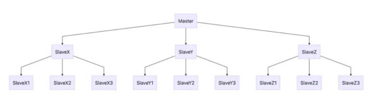

Redis 集群模式
摘要
本篇文章主要梳理一下 Redis 的集群模式，明白它是如何做到高可用、支持高并发的。
Copy On Write
首先要了解一下 copy on write 机制，才能理解 Redis 做备份时如何保持一致。copy on write（简写为 cow），中文名为写时复制，是计算机领域非常经典的优化思想。可以先从 linux 的 fork 函数了解下 cow 的原理。已经理解这部分知识的读者可以直接跳到下一章节。
fork 是 unix 系统上用于创建进程的函数，例如下面的 C 代码，调用 fork 后，会创建一个新的进程，从 fork 处接着向后执行。
1 |
|
fork 函数的特点是，它会在父子进程各返回一次，将子进程的 pid（进程 id）返回给父进程，将 0 返回给子进程，因此可以通过 pid 判断当前进程是父进程还是子进程。上述代码的结果是
1 | 我是子进程，由父进程fork出来 |
在 fork 之后，出现了一个与父进程的副本，从相同的位置向后执行。副本意味着从操作系统的角度，父子进程的地址空间是相同的（除了 fork 返回值），这样两个进程才能共享 fork 前的状态，同样地向后执行。如何实现这个副本呢？一种简单的想法是，直接申请相同大小的物理页，逐页面地拷贝数据，再更新页表即可。这样就可以保证两个进程的初始状态相同，且后续的修改不相互影响。如上所示，count 的值在每个进程中都是 1，而不是 2。
但是这样做的开销是非常大的，子进程可能只需要对很少的变量进行修改，拷贝整个地址空间显得既多余又严重影响速度，启动时间非常长。copy on write 就可以完美解决这个问题。在这种思想下，在 fork 后，两个进程是共享地址空间的，并把所有页面标记为 READ_ONLY，即只可读不可写，也就是 fork 只是把父进程的页表做了一次拷贝，非常快。当父 / 子进程需要对地址进行修改时：
- 发现页面不可修改，触发页异常中断 page-fault，申请新的页面，将旧页面数据拷贝至新页面
- 在新页面做修改，并更改页表映射关系
这也就是 copy on write 名字的由来，在需要修改（写入）的时候，对页面进行复制。这样既达到了非常快的启动时间，也实现了按需申请资源。当然缺点也是有的，如果父 / 子进程需要修改大量的数据，反复的异常中断也会影响性能。
复制与分片
数据库的集群模式中，按思想可分为复制和分片两类，这对 MySQL、Redis 都适用。这里先介绍下这两种思想，方便后续理解。需要注意的是，这两种方法应用于 MySQL 时都会有一致性的问题。
复制
在复制的概念中，数据库分为两类，一类是主数据库（master），另一类是从数据库（slave）。主数据库可以进行读写操作，当写操作导致数据变化时会自动将数据同步给从数据库。而从数据库一般是只读的，并接受主数据库同步过来的数据。一个主数据库可以拥有多个从数据库，而一个从数据库只能拥有一个主数据库。
引入复制的目的主要有：
- 读取高效：读取的吞吐量成倍提升，选择延迟更低的节点
- 多点备份，容灾恢复
复制的缺点也很明显，会有一致性的问题：写操作无法及时同步到主节点，导致读取数据不一致，对于 MySQL 这种需要保证一致性的数据库问题尤为严重。
复制的过程中需要同步写操作：
- 对于新启动的节点，最省事的方法当然是把整个数据库文件传过去
- 对于运行中的节点，只需要同步本次写的操作即可，MySQL 可以使用 binlog，Redis 可以使用 aof 日志
分片
在分片的概念中，需要按一定的规则，将数据分为若干个分区（partition），分布于各个节点上。分配规则可以是：
- MySQL
- 行分片：常用的按主键范围划分，例如 1-1w 在一个节点，1w-2w 在一个节点
- 列分片：也就是分表，将数据按数据库范式拆分，存储在不同节点
- Redis：使用 hash 将 key 转化为整数，再做范围划分
切片的优势在于：
- 写入高效，多个写操作命中不同的节点，互不影响，提高并发
- 读取昂贵：MySQL 中的联合、全表扫描操作效率降低，可能需要对多个节点加锁
- 对 Redis 还好
Redis 集群模式
主从复制
主从复制、读写分离是存储中常用的提高性能、可用性的方法。Redis 也不例外。最直觉的集群模式，就是设置很多的从节点复制，写操作在主节点完成，主从之间通过 aof 日志 /rdb 文件同步。整个架构如下所示，一个主节点可能有多个从节点，从节点可能再会有自己的从节点。

主从复制的具体流程如下：

流程如下从数据库启动成功后，连接主数据库，发送 SYNC 命令；
- 主数据库接收到 SYNC 命令后，开始执行 BGSAVE 命令生成 RDB 文件并使用缓冲区记录此后执行的所有写命令；
- 主数据库 BGSAVE 执行完后，向所有从数据库发送快照文件，并在发送期间继续记录被执行的写命令；
- 从数据库收到快照文件后丢弃所有旧数据，载入收到的快照；
- 主数据库快照发送完毕后开始向从数据库发送缓冲区中的写命令；
- 从数据库完成对快照的载入，开始接收命令请求，并执行来自主数据库缓冲区的写命令；（从数据库初始化完成）
- 主数据库每执行一个写命令就会向从数据库发送相同的写命令，从数据库接收并执行收到的写命令（从数据库初始化完成后的操作）
- 出现断开重连后，2.8 之后的版本会将断线期间的命令传给重数据库，增量复制。
- 主从刚刚连接的时候，进行全量同步；全同步结束后，进行增量同步。当然，如果有需要，slave 在任何时候都可以发起全量同步。Redis 的策略是，无论如何，首先会尝试进行增量同步，如不成功，要求从机进行全量同步。
其他步骤都比较好理解，最开始困扰我的是这个 bgsave，它生成的 RDB 文件为什么能够记录某个时间数据库的准确状态？如果不是准确状态，写命令执行两次不是会有幂等性问题？后面了解才知道，bgsave 是通过 fork 与 copy on write 实现的。
主从复制的优点基本就是复制操作的优点，就不赘述了，它的缺点在于：
- Redis 不具备自动容错和恢复功能，主机从机的宕机都会导致前端部分读写请求失败，需要等待机器重启或者手动切换前端的 IP 才能恢复（也就是要人工介入）；
- 主机宕机，宕机前有部分数据未能及时同步到从机，切换 IP 后还会引入数据不一致的问题，降低了系统的可用性；
- 如果多个 Slave 断线了，需要重启的时候，尽量不要在同一时间段进行重启。因为只要 Slave 启动，就会发送 sync 请求和主机全量同步，当多个 Slave 重启的时候，可能会导致 Master IO 剧增从而宕机。
- Redis 较难支持在线扩容，在集群容量达到上限时在线扩容会变得很复杂；
需要注意的是，新启动 / 重启的节点都需要发送 sync 请求和主机全量同步，会影响主服务的稳定性。
Sentinel（哨兵）模式
第一种主从同步 / 复制的模式，当主服务器宕机后，需要手动把一台从服务器切换为主服务器，这就需要人工干预，费事费力，还会造成一段时间内服务不可用。这不是一种推荐的方式，更多时候，我们优先考虑哨兵模式。消息队列 Kafka 使用的就是哨兵模式。
哨兵模式可以看成主从模式的扩展。首先 Redis 提供了哨兵的命令，哨兵是一个独立的进程，作为进程，它会独立运行。其原理是哨兵通过发送命令，等待 Redis 服务器响应，从而监控运行的多个 Redis 实例。

哨兵模式的作用
- 通过发送命令，让 Redis 服务器返回监控其运行状态，包括主服务器和从服务器；
- 当哨兵监测到 master 宕机，会自动将 slave 切换成 master ，然后通过发布订阅模式通知其他的从服务器，修改配置文件，让它们切换主机；
然而一个哨兵进程对 Redis 服务器进行监控，也可能会出现问题，为此，我们可以使用多个哨兵进行监控。各个哨兵之间还会进行监控，这样就形成了多哨兵模式。

故障切换的过程
假设主服务器宕机，哨兵 1 先检测到这个结果，系统并不会马上进行 failover 过程，仅仅是哨兵 1 主观的认为主服务器不可用，这个现象成为主观下线。当后面的哨兵也检测到主服务器不可用，并且数量达到一定值时，那么哨兵之间就会进行一次投票，投票的结果由一个哨兵发起，进行 failover 操作。切换成功后，就会通过发布订阅模式，让各个哨兵把自己监控的从服务器实现切换主机，这个过程称为客观下线。这样对于客户端而言，一切都是透明的。
哨兵模式的工作方式：
- 每个 Sentinel（哨兵）进程以每秒钟一次的频率向整个集群中的 Master 主服务器，Slave 从服务器以及其他 Sentinel（哨兵）进程发送一个 PING 命令。
- 如果一个实例（instance）距离最后一次有效回复 PING 命令的时间超过 down-after-milliseconds 选项所指定的值， 则这个实例会被 Sentinel（哨兵）进程标记为主观下线（SDOWN）
- 如果一个 Master 主服务器被标记为主观下线（SDOWN），则正在监视这个 Master 主服务器的所有 Sentinel（哨兵）进程要以每秒一次的频率确认 Master 主服务器的确进入了主观下线状态
- 当有足够数量的 Sentinel（哨兵）进程（大于等于配置文件指定的值）在指定的时间范围内确认 Master 主服务器进入了主观下线状态（SDOWN）， 则 Master 主服务器会被标记为客观下线（ODOWN）
- 在一般情况下， 每个 Sentinel（哨兵）进程会以每 10 秒一次的频率向集群中的所有 Master 主服务器、Slave 从服务器发送 INFO 命令。
- 当 Master 主服务器被 Sentinel（哨兵）进程标记为客观下线（ODOWN）时，Sentinel（哨兵）进程向下线的 Master 主服务器的所有 Slave 从服务器发送 INFO 命令的频率会从 10 秒一次改为每秒一次。
- 若没有足够数量的 Sentinel（哨兵）进程同意 Master 主服务器下线， Master 主服务器的客观下线状态就会被移除。若 Master 主服务器重新向 Sentinel（哨兵）进程发送 PING 命令返回有效回复，Master 主服务器的主观下线状态就会被移除。
哨兵模式的优缺点
优点：
- 哨兵模式是基于主从模式的，所有主从的优点，哨兵模式都具有。
- 主从可以自动切换，系统更健壮，可用性更高 (可以看作自动版的主从复制)。
缺点：
- Redis 较难支持在线扩容，在集群容量达到上限时在线扩容会变得很复杂。
Cluster 集群模式（Redis 官方）
Redis Cluster 是一种服务器 Sharding 技术，3.0 版本开始正式提供。
Redis 的哨兵模式基本已经可以实现高可用，读写分离 ，但是在这种模式下每台 Redis 服务器都存储相同的数据，很浪费内存，所以在 redis3.0 上加入了 Cluster 集群模式，实现了 Redis 的分布式存储，也就是说每台 Redis 节点上存储不同的内容。

在这个图中，每一个蓝色的圈都代表着一个 redis 的服务器节点。它们任何两个节点之间都是相互连通的。客户端可以与任何一个节点相连接，然后就可以访问集群中的任何一个节点。对其进行存取和其他操作。
集群的数据分片
Redis 集群没有使用一致性 hash，而是引入了哈希槽【hash slot】的概念。
Redis 集群有 16384 个哈希槽，每个 key 通过 CRC16 校验后对 16384 取模来决定放置哪个槽。集群的每个节点负责一部分 hash 槽，举个例子，比如当前集群有 3 个节点，那么：
- 节点 A 包含 0 到 5460 号哈希槽
- 节点 B 包含 5461 到 10922 号哈希槽
- 节点 C 包含 10923 到 16383 号哈希槽
这种结构很容易添加或者删除节点。比如如果我想新添加个节点 D ， 我需要从节点 A， B， C 中得部分槽到 D 上。如果我想移除节点 A ，需要将 A 中的槽移到 B 和 C 节点上，然后将没有任何槽的 A 节点从集群中移除即可。由于从一个节点将哈希槽移动到另一个节点并不会停止服务，所以无论添加删除或者改变某个节点的哈希槽的数量都不会造成集群不可用的状态。
在 Redis 的每一个节点上，都有这么两个东西，一个是插槽（slot），它的的取值范围是：0-16383。还有一个就是 cluster，可以理解为是一个集群管理的插件。当我们的存取的 Key 到达的时候，Redis 会根据 CRC16 的算法得出一个结果，然后把结果对 16384 求余数，这样每个 key 都会对应一个编号在 0-16383 之间的哈希槽，通过这个值，去找到对应的插槽所对应的节点，然后直接自动跳转到这个对应的节点上进行存取操作。
Redis 集群的主从复制模型
为了保证高可用，redis-cluster 集群引入了主从复制模型，一个主节点对应一个或者多个从节点，当主节点宕机的时候，就会启用从节点。当其它主节点 ping 一个主节点 A 时，如果半数以上的主节点与 A 通信超时，那么认为主节点 A 宕机了。如果主节点 A 和它的从节点 A1 都宕机了，那么该集群就无法再提供服务了。
集群的特点
- 所有的 redis 节点彼此互联 (PING-PONG 机制)，内部使用二进制协议优化传输速度和带宽。
- 节点的 fail 是通过集群中超过半数的节点检测失效时才生效。
- 客户端与 Redis 节点直连，不需要中间代理层。客户端不需要连接集群所有节点，连接集群中任何一个可用节点即可。